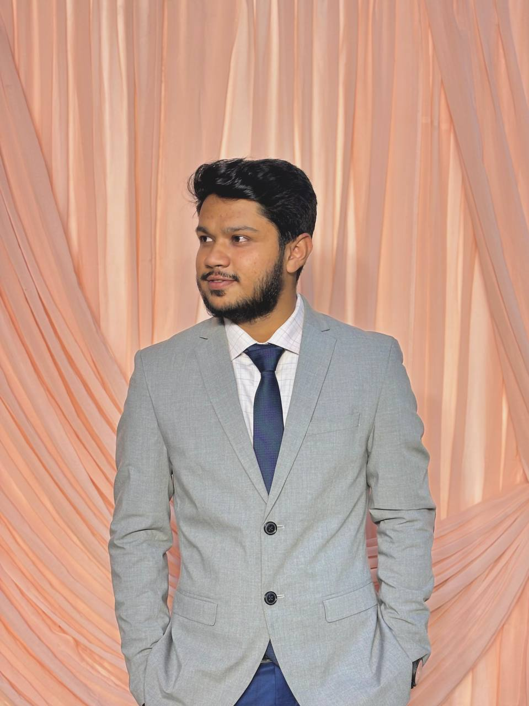

Md. Monjurul Haq Shakib
MS Thesis Student · Biochemistry and Molecular Biology
Shahjalal University of Science and Technology (SUST)
I study the molecular mechanisms of disease by combining laboratory work with bioinformatics, from gene expression and mutational landscapes to immune-related biomarkers and machine learning.

01 / research interests
What I work on
Multi-Omics
Integrating genomic, transcriptomic and other molecular layers to get a fuller picture of disease biology.
Transcriptomics
Gene expression analysis to identify differentially expressed genes, hub genes and candidate biomarkers.
Mutational Insights
Exploring mutational landscapes and selection pressure to understand how proteins evolve and function.
Immune Modulation
Immune-related genes and pathways and their role in disease onset and diagnosis.
Machine & Deep Learning
Applying ML and DL models to biological data for classification, prediction and pattern discovery.
Wet Lab + In Silico
Connecting bench techniques like PCR and qPCR with computational analysis in a single workflow.
02 / about
About & Education
I am a Biochemistry and Molecular Biology graduate working as an MS thesis researcher in the Department of Biochemistry and Molecular Biology at SUST, with a strong interest in bioinformatics and molecular biology.
My experience includes analyzing biological data, gene expression studies, and applying computational tools to understand the molecular mechanisms of disease. I am also skilled in research design, data interpretation and laboratory techniques, and I enjoy integrating wet-lab and in-silico approaches.
I am motivated, detail-oriented and eager to contribute to innovative research and scientific advancement.
- Current roleMS Thesis Student
- DepartmentBiochemistry & Molecular Biology, SUST
- LanguagesBengali (native) · English (fluent)
MS in Biochemistry and Molecular Biology
Shahjalal University of Science and Technology, Sylhet
CGPA 3.82 / 4.00
BSc in Biochemistry and Molecular Biology
Shahjalal University of Science and Technology, Sylhet
CGPA 3.66 / 4.00
Higher Secondary Certificate (Science)
Dhaka College, Dhaka · GPA 4.83 / 5.00
Secondary School Certificate (Science)
Ideal School and College, Motijheel, Dhaka · GPA 5.00 / 5.00
03 / projects
Research Projects
Shared hub genes between HIV infection and peripheral T-cell lymphoma
Identification of shared candidate hub genes between HIV infection and peripheral T-cell lymphoma through an integrated bioinformatics approach.
Immune-related hub genes in early-stage hepatocellular carcinoma
Bioinformatics-based identification of candidate immune-related hub genes and evaluation of their diagnostic potential in early-stage HCC.
Glycemic abnormalities and urinary findings among professional drivers
An opportunistic cross-sectional study of glycemic abnormalities and associated urinary findings in professional drivers.
Occupational health screening in road-safety surveillance
Cross-sectional evidence from professional drivers in Bangladesh on integrating occupational health screening into road-safety surveillance.
Selection pressure and mutational landscape of the HIV-1 Vpr protein
Bioinformatic analysis of the mutational landscape and evolution of HIV-1 Vpr. Presented as a poster at ICLS 2025, Sylhet.
Random blood glucose screening among professional drivers
Opportunistic screening in northeastern Bangladesh assessing undiagnosed diabetes and health awareness. Published in PLOS Global Public Health.
04 / publications & presentations
Publications
Opportunistic random blood glucose screening among professional drivers in northeastern Bangladesh: Assessing undiagnosed diabetes and health awareness
PLOS Global Public Health 5(6): e0004828
Poster Presentation
Insights of the Selection Pressure and Mutational Landscape of the HIV-1 VPR Protein
International Conference on Life Sciences (ICLS 2025), Sylhet, Bangladesh, October 2025
05 / skills
Skills & Tools
Wet Lab
Bioinformatics & Data
Visualization & Software
06 / leadership & teamwork
Leadership
General Secretary
BMB Society, SUST
Senior Vice President
Barisal Divisional Student Association, SUST
Organizing Committee Member
1st BMB Symposium: Molecules of Life, SUST
Cultural Secretary
Barisal Divisional Student Association, SUST
Executive Member
Graduation Development Goal (GDN), SUST
Campus Ambassador
Excellence Bangladesh, SUST
07 / contact
Let's connect
I'm open to research collaborations, graduate opportunities and conversations about bioinformatics, transcriptomics and molecular biology.
shakibacademic@gmail.com